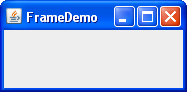
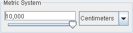

javax.swing.JButton | [tutorial] | [api]Il pacchetto javax.swing, incluso nella libreria di classi a corredo del JRE, contiene le principali componenti grafiche necessarie allo sviluppo di applicazioni desktop grafiche in Java. Per applicazione desktop grafica si intende un'applicazione dotata di un'interfaccia utente interattiva (detta anche GUI Graphic User Interface). Per una disamina esaustiva delle componenti Swing si rimanda alla documentazione Oracle (tutorial e API); per una consultazione superficiale si può fare riferimento alla seconda parte di questa dispensa in cui viene riportato un indice visuale delle principali componenti Swing.
La componente Swing fondamentale è rappresentata dalla classe javax.swing.JFrame. Un oggetto di tipo JFrame costituisce infatti lo scheletro di una finestra grafica sulla quale dovranno essere opportunamente ospitate altre componenti grafiche. Ovviamente, la scelta di quest'ultime dipenderà dal tipo di funzionalità che l'applicazione nel suo complesso dovrà offrire all'utente.
Per iniziare si consideri la classe HelloWorldSwing.
import javax.swing.JFrame;
public class HelloWorldSwing {
public static void main(String[] args) {
new JFrame("HelloWorldSwingGUI").setVisible(true);
}
} // end classDomande:
setVisible()?HelloWorldSwingGUI"?Consultando la documentazione Oracle, in particolare le Java API, modificare il codice della classe HelloWorldSwingGUI in modo tale che (i) si possa chiudere l'applicazione cliccando sull'apposita icona "ad X"; (ii) la dimensione iniziale della finestra sia di 800 x 300 pixel (cioè width = 800, height = 300).
import java.awt.Dimension;
import javax.swing.JFrame;
public class HelloWorldSwing {
public static void main(String[] args) {
// costruttore che imposta il titolo della finestra
JFrame frame = new JFrame("HelloWorldSwingGUI");
// il programma termina quando la finestra viene chiusa
frame.setDefaultCloseOperation(JFrame.EXIT_ON_CLOSE);
// imposta le dimensioni iniziali della finestra
frame.setSize(new Dimension(800, 300));
frame.setVisible(true);
}
} // end classSempre consultando la documentazione Oracle, inserire nella finestra un'etichetta contenente la stringa "HelloWorldSwingGUI"; utilizzare a tale scopo la componente Swing javax.swing.JLabel. Delegare inoltre il dimensionamento della finestra al metodo pack().
import java.awt.Container;
import java.awt.Dimension;
import javax.swing.JFrame;
import javax.swing.JLabel;
public class HelloWorldSwing {
public static void main(String[] args) {
JFrame frame = new JFrame("HelloWorldSwingGUI");
frame.setDefaultCloseOperation(JFrame.EXIT_ON_CLOSE);
JLabel label = new JLabel("Hello World"); // crea una componente JLabel
Container contPane = frame.getContentPane();
contPane.add(label); // aggiunge l'etichetta al content pane del JFrame
// calcola le dimensioni della finestra in base a quelle delle componenti
// nel farlo cerca di visualizzare tutte le componenti per intero
frame.pack();
frame.setVisible(true);
}
} // end classModificare la classe HelloWorldSwing influenzando l'esito del metodo pack() in modo tale da avere una finestra che, in ogni caso, abbia una dimensione iniziale pari a 300 x 400 pixel.
...
...
frame.setPreferredSize(new Dimension(300, 400));
...
frame.pack();
...Di seguito si riporta il codice della classe HelloWorldSwing illustrata nel tutorial Java.
package start;
/*
* HelloWorldSwing.java requires no other files.
*/
import javax.swing.*;
public class HelloWorldSwing {
/**
* Create the GUI and show it. For thread safety,
* this method should be invoked from the
* event-dispatching thread.
*/
private static void createAndShowGUI() {
//Create and set up the window.
JFrame frame = new JFrame("HelloWorldSwing");
frame.setDefaultCloseOperation(JFrame.EXIT_ON_CLOSE);
//Add the ubiquitous "Hello World" label.
JLabel label = new JLabel("Hello World");
frame.getContentPane().add(label);
//Display the window.
frame.pack();
frame.setVisible(true);
}
public static void main(String[] args) {
//Schedule a job for the event-dispatching thread:
//creating and showing this application's GUI.
javax.swing.SwingUtilities.invokeLater(new Runnable() {
public void run() {
createAndShowGUI();
}
});
}
} // end classDomanda: Qual è l'utilità del metodo javax.swing.SwingUtilities.invokeLater()? Cosa viene passato in input a tale metodo?
Le linee guida sull'utilizzo del framework Swing raccomandano che tutto il codice per creare e per interagire con le componenti Swing debba essere eseguito su uno specifico thread, denominato event dispatch thread. In particolare, il thread iniziale di un programma Swing non deve fare molte cose, ma deve limitarsi a creare un oggetto Runnable che inizializza la GUI e preoccuparsi che l'esecuzione del codice di tale oggetto, cioè del suo metodo run(), avvenga nell'event dispatch thread. Il metodo javax.swing.SwingUtilities.invokeLater() è stato concepito proprio per questo scopo, ovvero garantisce l'esecuzione nell'event dispatch thread del codice dell'oggetto Runnable che gli viene passato in argomento.
Una volta che la GUI è creata, il programma è principalmente guidato dagli eventi della GUI, ciascuno dei quali comporta l'esecuzione di task (codice per la gestione degli eventi) sempre nell'event dispatch thread. È importante pertanto che la gestione degli eventi preveda un codice snello e soprattutto di rapida esecuzione, altrimenti l'effetto risultante sarà un rallentamento o addirittura un blocco temporaneo della GUI. Nei casi in cui la GUI deve necessariamente controllare dei task "lenti" allora la gestione dell'evento non deve avvenire nell'event dispatch thread, ma in un altro thread separato, in queste situazione viene raccomandato l'utilizzo dei cosiddetti worker threads.
Per maggiori dettagli si consulti il tutorial alla voce Concurrency in Swing.
Componenti semplici utilizzate principalmente per acquisire l'input dell'utente; possono anche mostrare uno stato semplice.
javax.swing.JButton | [tutorial] | [api]
javax.swing.JCheckBox | [tutorial] | [api]
javax.swing.JComboBox | [tutorial] | [api]

javax.swing.JList | [tutorial] | [api]

javax.swing.JMenu | [tutorial] | [api]
javax.swing.JRadioButton | [tutorial] | [api]

javax.swing.JSlider | [tutorial] | [api]
javax.swing.JSpinner | [tutorial] | [api]

javax.swing.JTextField | [tutorial] | [api]
javax.swing.JPasswordField | [tutorial] | [api]
Queste componenti permettono di visualizzare informazioni con formattazione sofisticata e modificabili dall'utente.

javax.swing.JColorChooser | [tutorial] | [api]
javax.swing.JEditorPane | [tutorial] | [api]
javax.swing.JTextPane | [tutorial] | [api]

javax.swing.JFileChooser | [tutorial] | [api]

javax.swing.JTable | [tutorial] | [api]

javax.swing.JTextArea | [tutorial] | [api]
javax.swing.JTree | [tutorial] | [api]
Queste componenti non sono interattive (il loro contenuto non è editabile) e servono soltanto a mostrare delle informazioni all'utente.

javax.swing.JLabel | [tutorial] | [api]

javax.swing.JProgressBar | [tutorial] | [api]
javax.swing.JSeparator | [tutorial] | [api]
javax.swing.JToolTip | [tutorial] | [api]
Almeno una di queste componenti deve essere presente in ogni applicazione Swing; si tratta delle componente che ospiterà direttamente o indirettamente tutte le altre.
javax.swing.JApplet | [tutorial] | [api]

javax.swing.JDialog | [tutorial] | [api]
 javax.swing.JFrame | [tutorial] | [api]
Si tratta di componenti il cui scopo principale è quello di contenere altre componenti al fine di controllarne il layout complessivo o di fornire altre tipiche funzionalità delle UI finalizzate ad agevolare l'interazione con l'utente.
 javax.swing.JPanel | [tutorial] | [api]
javax.swing.JScrollPane | [tutorial] | [api]

javax.swing.JSplitPane | [tutorial] | [api]
javax.swing.JTabbedPane | [tutorial] | [api]
javax.swing.JToolBars | [tutorial] | [api]
Si tratta di componenti di tipo Container da utilizzare in alcuni casi speciali e che offrono delle funzionalità molto specifiche.
javax.swing.JInternalFrame | [tutorial] | [api]
javax.swing.JLayeredPane | [tutorial] | [api]

javax.swing.JRootPane | [tutorial] | [api]